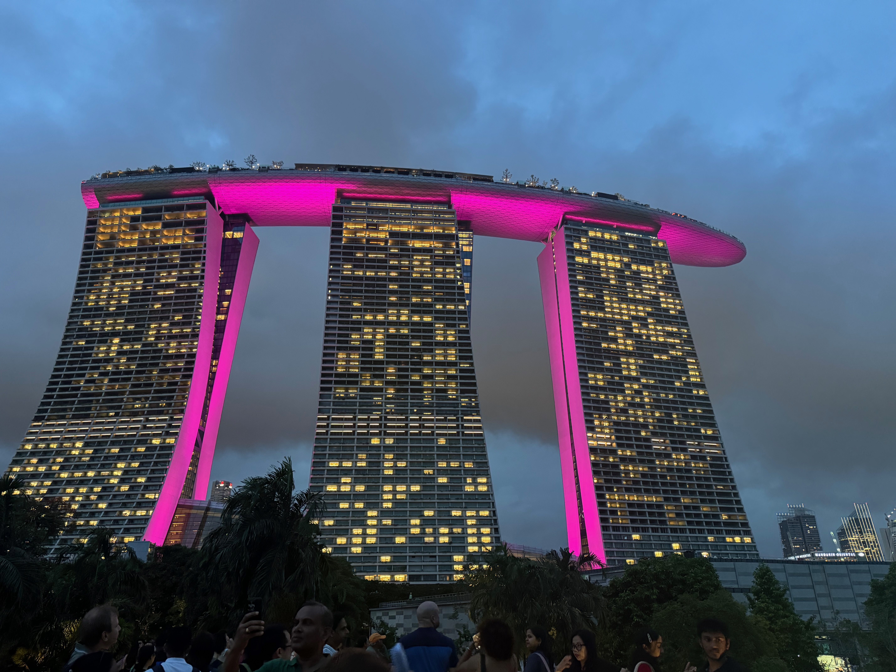

01/11/2025
go backHappy new year! Honestly it doesn't feel like much has changed. I'm up at 4am again because of jetlag (I was in a similar situation a year ago). I also woke up with a sore throat 💀. I don't feel that bad though actually. These past 2 weeks I went to Singapore, Chongqing, Shanghai, and Beijing. I had a f*cking amazing time. I had so much fun and had many new experiences. Singapore was great. It was so modern and clean and I thought it was really cool how everyone speaks both english and chinese. Marina Bay Sands was super nice. People were also very friendly. It was my first time in Southeast Asia. Unfortunately the haircut I got there wasn't very good lol. I'd like to go back someday.

Chongqing was also amazing. The city is super impressive with the 长江 going through it. It really is an 8D city like people say. There were lots of chinese tourists and a lot of chinese baddies. A lot of young people. The hotpot was really spicy though. I had a lot of milk tea there, Chagee has become my new favorite spot. We also went to the museum which I actually really enjoyed. I enjoyed learning about the history of WWII with the Chinese falling back to Chongqing. During the bombings, people wrote on the wall "愈炸愈强", "the more they bomb us, the stronger we get". Idk if I'm getting old because I'm starting to enjoy art/history more. My parents left earlier than me so I spent a day and a half traveling alone for the first time in China. It was great. There were fdefinitely times when I felt lonely or tired though. The most tired I got on this trip was the night safari in Singapore. I was lowkey crashing out mentally. Overall, it was better this trip than the last one. Idk if it's because my cardio is better. Chongqing is great though, highly recommend.
 Then I went to Shanghai. I got there at like 10 pm so had to call a taxi. The guy charged me 100 yuan (a lot) and insisted I sounded Japanese. I stayed at a hostel and it was honestly not bad. My bunkmate was a bit smelly though. There was a good number of people in the hostel. It reminded me of my sharehouse in Japan. Anyways, the first day I walked around the Bund and Nanjing road. In the evening, I went to Yu garden. There were a lot of girls getting dressed up + makeup to take picutres in hanfu. That night I met up with Alec and Warren and we went clubbing at INS. Since it was a Monday night only one floor was open. We drank a good amount and I ended up crashing at their hotel. Next day, we spent shopping and got Haidilao for dinner. Shanghai was fire, but probably wouldn't be as fun alone. I feel like there's not that much there except shopping and baddies. I was lowkey getting burnt out from the malls towards the end.
Finally I went to Beijing to seee my relatives. I visited my grandparents and ended up staying ht enight. he next day, I went to my dad's place to shower and went shopping. The next day I flew back, laying over in Incheon for 7 hours.
Then I went to Shanghai. I got there at like 10 pm so had to call a taxi. The guy charged me 100 yuan (a lot) and insisted I sounded Japanese. I stayed at a hostel and it was honestly not bad. My bunkmate was a bit smelly though. There was a good number of people in the hostel. It reminded me of my sharehouse in Japan. Anyways, the first day I walked around the Bund and Nanjing road. In the evening, I went to Yu garden. There were a lot of girls getting dressed up + makeup to take picutres in hanfu. That night I met up with Alec and Warren and we went clubbing at INS. Since it was a Monday night only one floor was open. We drank a good amount and I ended up crashing at their hotel. Next day, we spent shopping and got Haidilao for dinner. Shanghai was fire, but probably wouldn't be as fun alone. I feel like there's not that much there except shopping and baddies. I was lowkey getting burnt out from the malls towards the end.
Finally I went to Beijing to seee my relatives. I visited my grandparents and ended up staying ht enight. he next day, I went to my dad's place to shower and went shopping. The next day I flew back, laying over in Incheon for 7 hours.